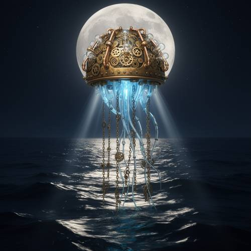
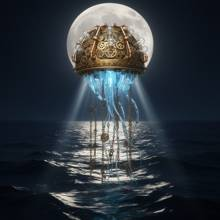
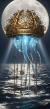

Logical Reasoning — Steampunk style, a mechanical jellyfish made of brass gears and glass
Steampunk style, a mechanical jellyfish made of brass gears and glass tubes, is emitting soft blue light inside its body as it absorbs moonlight.


Judge — Direct
- FAILLogical Reasoning — The image shows the mechanical jellyfish emitting a soft blue light, and a full moon is present in the sky. However, the act of the jellyfish "absorbing" the moonlight to produce the light is a causal relationship and a process, which cannot be visually verified in a static image. We can see the elements (moonlight and blue light) but not the action connecting them.
- PASSStyle — The image clearly adheres to a steampunk style. The central object is made of brass-colored metals, intricate and exposed gears, rivets, and tubes, which are all characteristic elements of the steampunk aesthetic.
- PASSCompound - Feature Matching — The image features an object that combines the form of a jellyfish (a bell-shaped body with trailing tentacles) with the features of a machine (gears, metalwork, artificial lighting). It is therefore accurately described as a mechanical jellyfish.
- PASSRelationship - Composition — The jellyfish is visibly composed of the materials specified in the prompt. The bell-shaped body is a complex structure made of brass-colored metal and covered in gears. Hanging from the bell are several transparent tubes that appear to be made of glass.
Judge — Continuum
- PASSLogical Reasoning — The image depicts a mechanical jellyfish positioned directly in front of a large, bright full moon over the ocean. The jellyfish is emitting a soft blue light from its lower section and tentacles. The presence of the bright moon directly behind the glowing object visually suggests the action of absorbing moonlight.
- PASSStyle — The image adheres to the Steampunk style. The jellyfish is constructed from brass-colored metal, visible gears, pipes, chains, and what appear to be vacuum tubes or light bulbs, all of which are hallmarks of the steampunk aesthetic.
- PASSCompound - Feature Matching — The central figure in the image is a mechanical object that is clearly modeled after the shape of a jellyfish, featuring a large, dome-like bell and long, flowing tentacles. This combination of a biological form with mechanical parts accurately represents a "mechanical jellyfish".
- PASSRelationship - Composition — Upon close inspection, the mechanical jellyfish is constructed from the specified components. Its bell is adorned with numerous brass gears, and its tentacles are made from a combination of thin glass tubes and brass chains, from which smaller brass gears hang.
What the agent did
Thinking
The user is asking for a steampunk-style mechanical jellyfish composed of brass gears and glass tubes, with a soft blue light inside the body, and it's emitting that light while absorbing moonlight. Let me generate an image with flux2-dev as required by the benchmark policy. Let me fill in the visual details: steampunk, brass gears, glass tubes, soft blue inner light, moonlight, probably a nighttime sea scene, an ocean at night with a moon. Alright, let me create the prompt.
Step 1 — `generate_image`
{
"model": "flux2-dev",
"prompt": "Steampunk fantasy illustration of a mechanical jellyfish floating in a dark night ocean. The jellyfish bell is crafted from polished brass gears, cogs, riveted metal plates, and small copper pipes; its dome has clear glass tubes and glass bulbs woven through the brass framework. A soft, glowing blue light emanates from inside the brass body, visible through the glass tubes. Long delicate tentacles made of thin brass chains, tiny gears, and glass strands trail downward, also tinged with faint blue glow. A large full moon hangs in a starry night sky above the water, moonbeams pouring down onto the sea surface, and the mechanical jellyfish absorbs the moonlight, light converging into its glowing blue core. Deep blue-black water, gentle ripples, silver moonlight reflections, subtle brass reflections, cinematic atmosphere, highly detailed, atmospheric glow.",
"width": 1024,
"height": 1024
}Result img_0

Thinking
Let's evaluate the result against the prompt: 1. Steampunk style ✓ — brass gears, cogs, riveted metal 2. Mechanical jellyfish ✓ — bell with gear/cog decoration, chain and tentacles with glass strands 3. Brass gears ✓ 4. Glass tubes — there are glass bulbs/lights on top, but "glass tubes" as a visible element is weak. The upper section has glass bulbs with blue light. There are glass-like tentacles. Hmm, it's decent. 5. Soft blue light inside the body ✓ — the blue glow under the bell is clearly visible 6. Absorbing moonlight ✓ — beams of moonlight flowing downward toward the jellyfish The image is actually pretty good. Let me inspect the details to see whether the glass tube element exists. The upper dome has glass bulbs. The blue light is concentrated under the bell (the "inner body" glow) rather than being distributed throughout the bell itself, but that's fine — it looks like the glow is coming from within. One thing I noticed: the jellyfish appears to be floating in the air above the ocean, and while that's poetically fine, the prompt says "inside the body" is glowing — which is satisfied. Let me inspect the region of the bell to check the glass tubes and blue light.
Step 2 — `inspect_region`
{
"image": "img_0",
"roi": "the brass bell of the jellyfish",
"padding": 0.1
}Result img_1

Thinking
The image is very close to the prompt. Let me evaluate it: 1. Steampunk style ✓ — brass gears, copper pipes, riveted metal 2. Mechanical jellyfish ✓ — a bell with tentacles 3. Brass gears ✓ — clearly visible gears and cogs 4. Glass tubes ✓ — glass bulbs/tubes embedded in the dome, glass tentacles 5. Soft blue light inside the body ✓ — a blue glow visible within and beneath the bell 6. Absorbing moonlight ✓ — moonlight beams converging on the jellyfish The composition is beautiful. The blue glow is strong, and the tentacles are a beautiful blend of brass chains and glass tentacles. The moonlight beams are visible. Minor nitpicks: - The blue glow could be said to be more concentrated on the underside (the oral arms) rather than "inside the body," but in the cropped view, the glass bulbs in the dome also show a blue light. The glow is clearly coming from inside the body — the blue light is diffusing through the lower portion. Good enough. - The jellyfish is floating above the water surface — the prompt doesn't specify whether it should be underwater, just that it's "absorbing moonlight" while "emitting a soft blue light inside the body." The floating pose with moonlight beams is actually evocative. I think this is a strong result. The prompt doesn't ask for any text. All elements are present. I'll mark this as the best. Let me check the mark: this is img_0, and the crop is img_1. I'll mark img_0 as the best.
Model
The image meets all the requirements of the prompt: the steampunk bell is composed of brass gears, copper pipes, and riveted plates; the glass tubes and bulbs are embedded in the dome, with glass strands trailing among the brass chain tentacles; a soft blue light glows from inside the body and diffuses through the lower glass; and a beam of moonlight converges from the full moon to the jellyfish, capturing the "absorbing moonlight" moment. The composition and atmosphere are solid, and no further correction is needed.
Step 3 — `mark_best`
{
"image": "img_0",
"reason": "All prompt elements present: steampunk mechanical jellyfish of brass gears and glass tubes, soft blue light glowing inside the body, and moonlight visibly being absorbed from the moon above."
}Thinking
Marked. Done. I'll convey the summary to the user.
Model
Done. The final image (img_0, marked as best) shows the steampunk mechanical jellyfish: - **Brass construction** — the bell is built from polished brass gears, cogs, riveted plates, and copper piping - **Glass tubes** — clear glass bulbs and tubes woven through the dome, with glass-strand tentacles trailing down among brass chains and tiny gears - **Soft blue light** — glowing from inside the body, diffusing through the glass and the lower bell - **Absorbing moonlight** — a full moon overhead, with visible moonbeams converging into the jellyfish as it rises over a dark, moonlit sea The result matched the prompt well on the first generation, so no edits were needed.